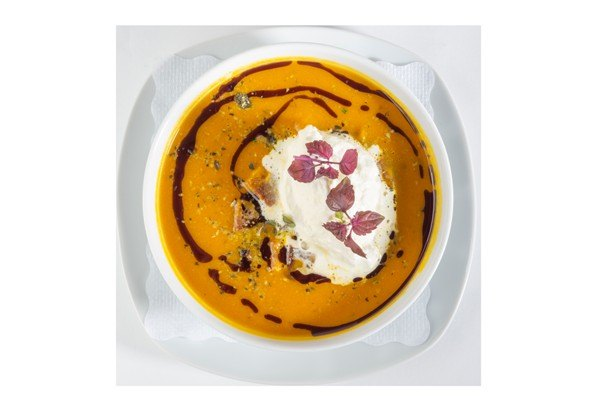

Suppen & Eintopf
Die Herzl trinkt dazu: ein Glas Schilcher vom Langmann
Schwammerlsuppe mit Heidensterz
zubereitet mit Grammeln
€ 5,80
Frittatensuppe
€ 4,80
Herzl Festtagssuppe
Leberknödel, Fleischstrudel und Frittaten mit frischem Gemüse in kräftiger Rindsuppe, frischer Schnittlauch
€ 5,40
Kürbiscremesuppe
vom Hokkaidokürbis mit Sahnehäubchen, einem Schuss Kernöl und gerösteten Brotwürfeln, Kürbiskerne
€ 5,60
